复审结论：阻塞不止原先四个角色镜头。角色层面仍是 SH002、SH010、SH020、SH032；另外发现数学图解中多处英文标签，已定向重绘为中文/α/δ 版本。
已定向重绘的数学图解
- SH015：图中英文 convex hull / non-convex 改为中文
- SH025：alpha 改为 α，保留 δ 管宽
- SH026：small alpha / large alpha / gold overlap 改为中文与 α
- SH027：length / area / overlap 英文公式说明改为中文与 α/δ
- SH028：curve / all directions 英文说明改为中文
- SH029：area may be 0 / dimension = 2 改为中文
- SH031：tube overlap / maximal averages / wave packets 改为中文
SH002 - 提出问题
决策：可替换正式帧
独立审查通过：四人身份明显贴近 selected asset，三帧连续性成立，无数学/中文文字风险。

参考资产
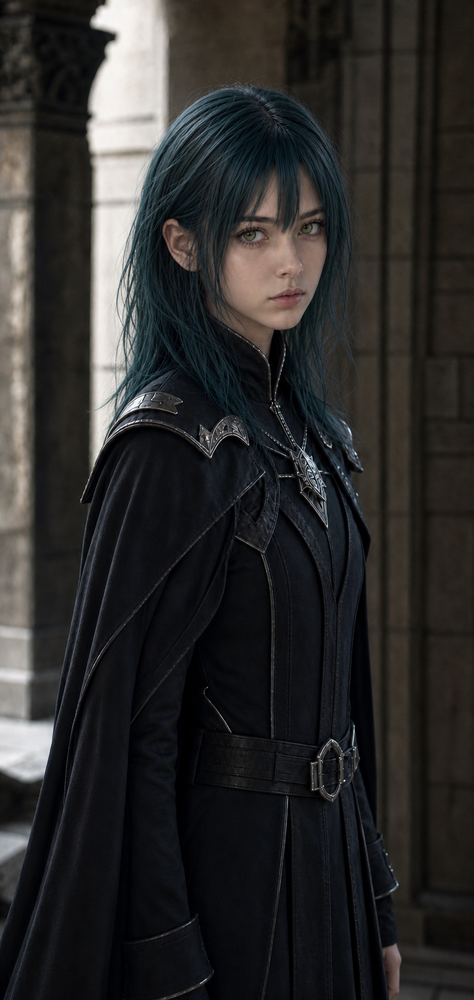

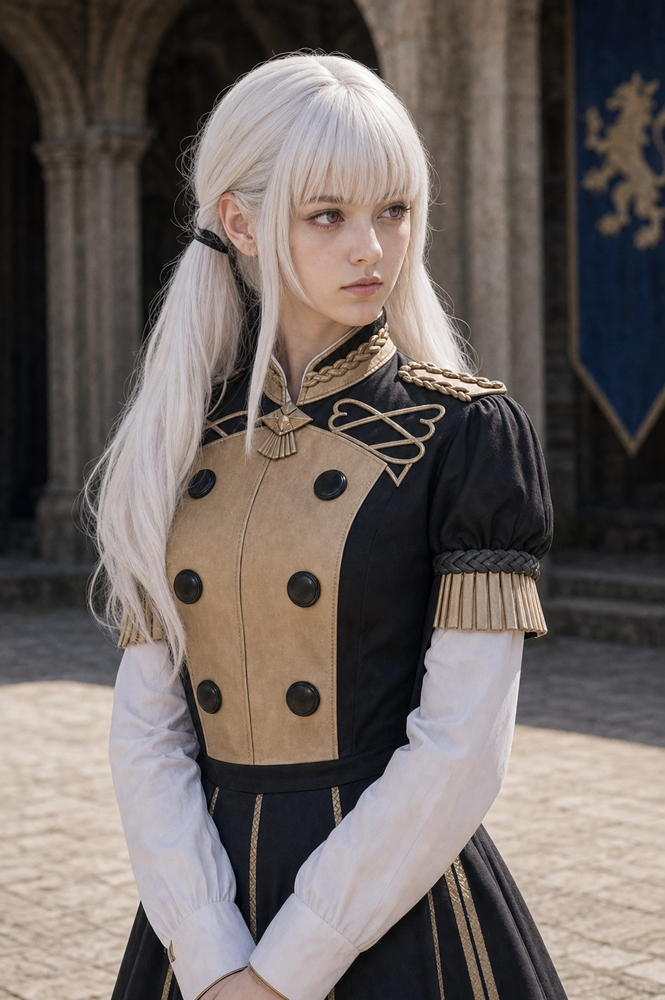

旧正式帧（仍阻塞）
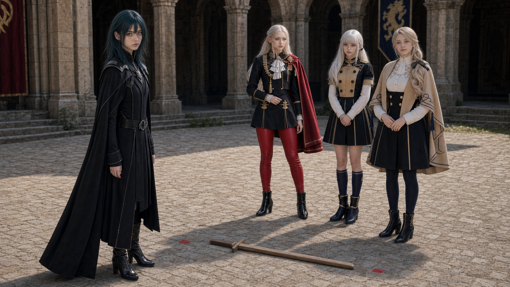
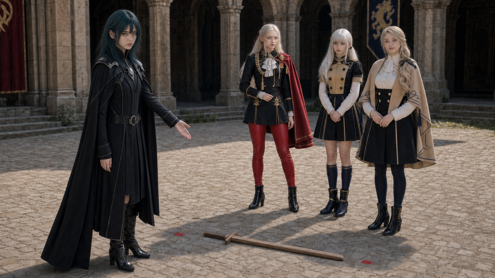
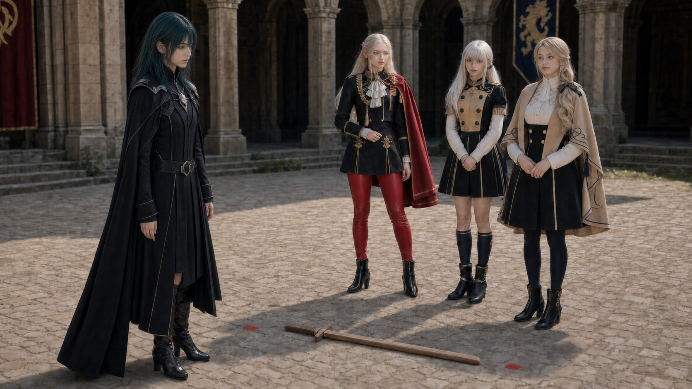
重生候选帧（待审查）


SH010 - 艾黛尔质疑
决策：最新候选待独立复审
v2 虽可替换但有黑板补丁与 deltoid 监看风险；v3 改为整帧生成干净黑板底，再用自然粉笔数学层绘制 deltoid 与中文说明，禁止人物抠图。

参考资产
旧正式帧（仍阻塞）

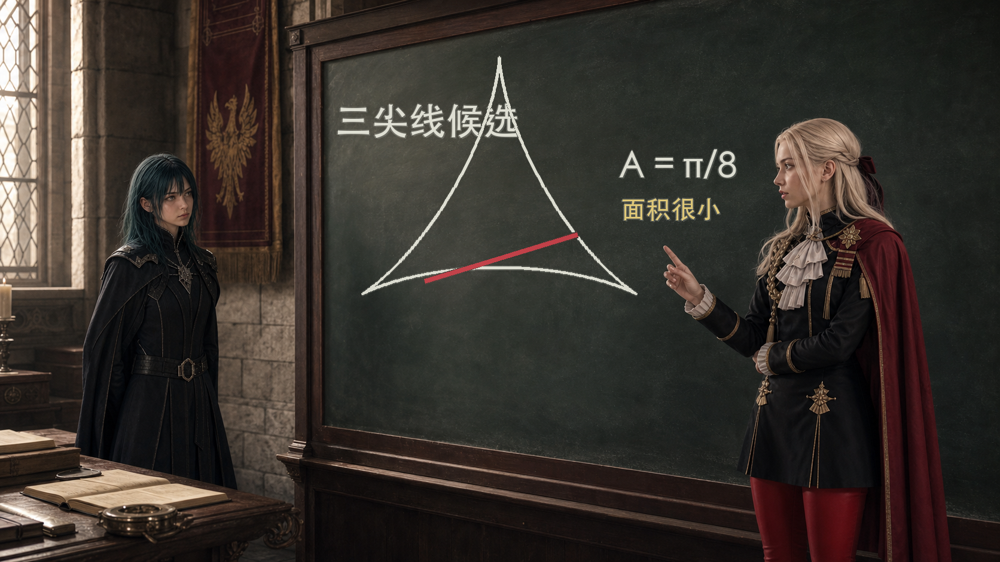

重生候选帧（待审查）
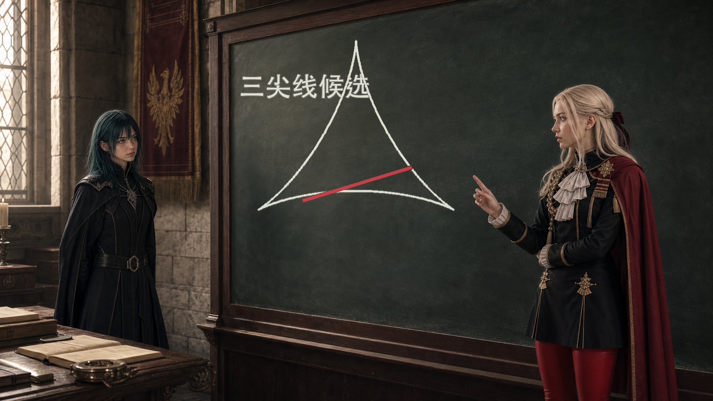

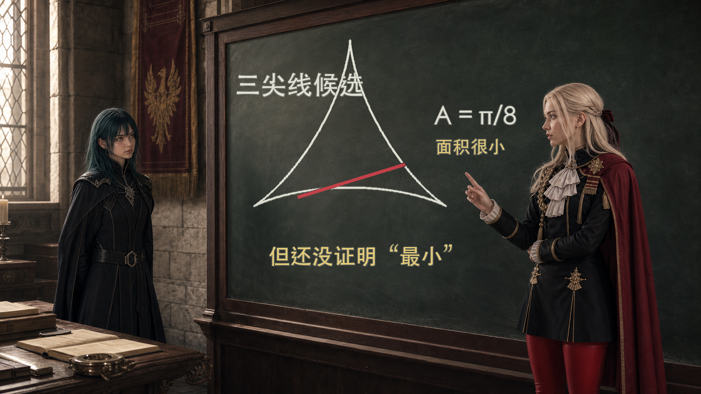
SH020 - 学生质疑 Perron 构造
决策：可替换正式帧，但需运动监看
独立审查认为四人身份和三帧连续性显著优于旧版；Perron 桌面碎片和绿色方向带仍偏复杂，替换后需监看数学桌面细节是否跳动。

参考资产
旧正式帧（仍阻塞）


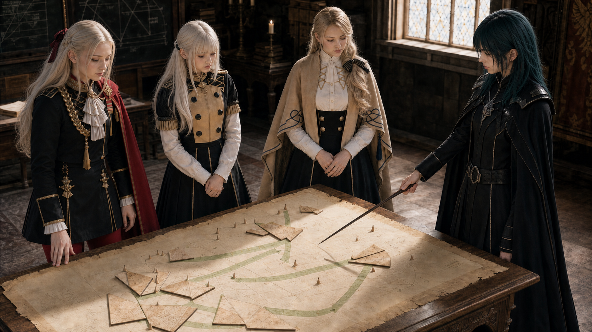
重生候选帧（待审查）
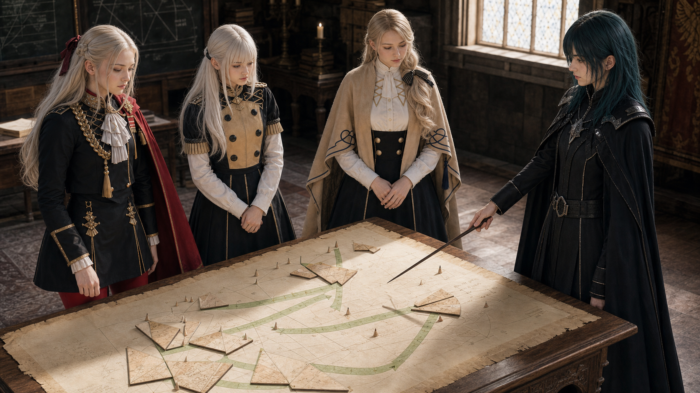


SH032 - 名称揭示
决策：最新候选待独立复审
v1 因 key/end 黑板文字修补区域像遮罩被拒绝；v2 改为整帧生成干净黑板底，再加自然粉笔中文标题，禁止人物抠图。

参考资产
旧正式帧（仍阻塞）

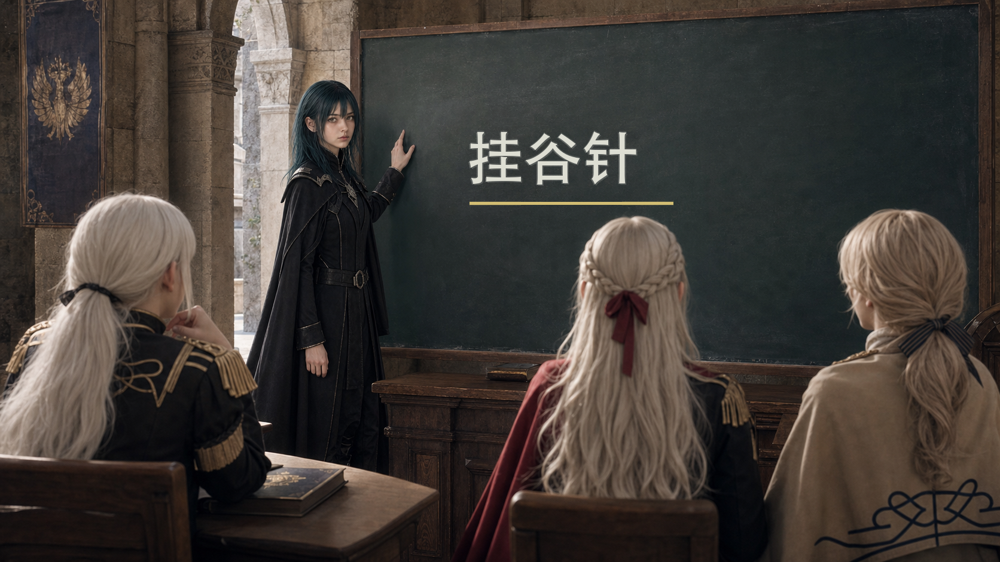

重生候选帧（待审查）
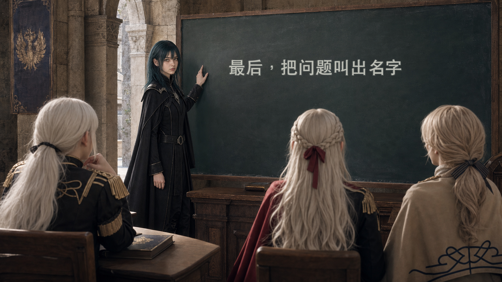

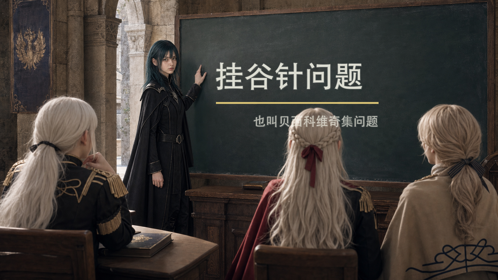